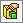

Видео уроки
|
Табурет сверху вниз |
Как включить RealView |
Как включить RealView |
|
Табурет сверху вниз |
Как включить RealView |
Как включить RealView |
|
Табурет сверху вниз |
Как включить RealView |
Как включить RealView |
Общее
После установки SW по умолчанию на инструментальных панелях отображается едва ли половина из всех доступных команд.
Menu/Инструменты->Настройка->вкладка Команды,
выберите из списка Элементы и увидите справа все доступные команды для панели Элементы,
возьмите там Перместить/Копировать и перетащите на панель инструментов Элементы.
Теперь эта команда всегда будет под рукой!
- Про Solidworks...
- Чтобы изменить положение модели относительно осей нужно выбрать Menu/Вставка/Элементы/Переместить/Копировать...
- Чтобы редактировать массив: ПКМ на экземпляр массива и выберите иконку Редактирования . Если выбран параметр Отобразить количество экземпляров, можно дважды щелкнуть количество экземпляров и изменить его в графической области.
- Настройка инверсии колёсика мыши Menu/Инструменты/Параметры.../Вид/Реверс изменения масштаба с помощью колеса мыши
- Чтобы правильно отображались размеры нужно настроить шаблоны по умолчанию как вам нужно и сохранить их. Смотри следующие две подсказки.
- Шаблоны по умолчанию Menu/Инструменты/Параметры.../Шаблоны по умолчанию
- Чтобы открыть для редактирования шаблоны по умолчанию - Menu/Файл/Открыть... в фильтре <тип файлов> вместо <Все файлы> выбрать <Template...>
- Чтобы отобразить плоскости необходимо в дереве построения на нужной плоскости нажать ПКМ и включить отображение. Или Menu/Вид/Отобразить-Скрыть/Плоскости
- Рулетка для измерений детали или сборки включается на панели инструментов Анализировать кнопка Измерить
- Для перемещения или вращения детали относительно начала координат Menu/Вставка/Элементы/Переместить/Копировать
- Чтобы переместить систему координат в другое место:
- Нажмите Система координат на панели инструментов «Справочная геометрия» или Вставка > Справочная геометрия > Система координат.
- Определите систему координат в таком месте на детали или сборке, где имеются необходимые объекты, чтобы контролировать угол и направление каждой оси.
- Нажмите в окне Исходная точка, затем выберите точку или вершину, куда требуется переместить исходную точку.
- Щелкните .
- Чтобы вставить картинку в эскиз нужно в режиме редактирования эскиза выбрать Menu/Инструменты/Инструменты эскиза/Картинка эскиза...
Исходная точка переместится в выбранное местоположение.